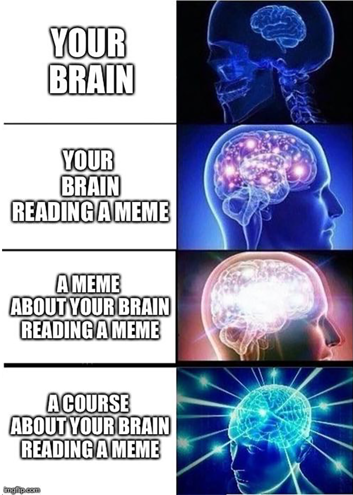
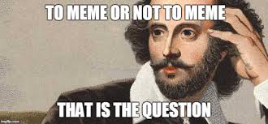

The 2058 Meme Chat Room
Welcome to a future world in which we've learned how to communicate only through MEMES 💗

Instructions:
- Let's try to create a conversation only with memes! No text allowed!
- Right click on a web-based meme, copy the "Image Address", paste it to the chat and click
"send!"
- Try to imagine a real conversation flow responding to the last meme.
- Don't push yourself too hard, it doesn't need to make too much sense 😜
